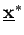

Inhalt Index DeskTop Bronstein

 Optimierung Nichtlineare Optimierung Straf- und Barriereverfahren
Optimierung Nichtlineare Optimierung Straf- und Barriereverfahren


Es wird eine Folge von Ersatzproblemen der Form
betrachtet. Der Term verhindert, daß der zulässige Bereich M bei der Lösung von (18.105) verlassen wird, indem die Zielfunktion bei Annäherung an den Rand von M unbeschränkt wächst. Die Regularitätsbedingung
| (18.106) |
sei erfüllt, d.h., das Innere von M ist nicht leer und der Abschluß von M0 ist gleich  .
.
Die Funktion ist auf M0 definiert und stetig. Sie wächst auf dem Rand von M nach . Das Ersatzproblem (18.105) wird mit einer gegen Null fallenden Folge von Barriereparametern qk gelöst. Für die Lösung  des k-ten Problems (18.105) gilt
des k-ten Problems (18.105) gilt
| (18.107) |
und jeder Häufungspunkt  der Folge  ist eine Lösung von (18.99).
ist eine Lösung von (18.99).
Die folgende Abbildung zeigt eine Veranschaulichung des Barriereverfahrens.
Als Realisierungen für die Funktion sind z.B. geeignet
| Beispiel |
|
, , |
Die Lösung der Aufgaben (18.100) und (18.105) im k-ten Schritt hängt nicht von den Lösungen der vorangegangenen Schritte ab. Bei der Verwendung großer Straf- bzw. kleiner Barriereparameter treten bei der Lösung von (18.100) und (18.105) mittels numerischer Verfahren häufig Konvergenzprobleme auf, falls keine gute Startnäherung verfügbar ist. Praktisch nutzt man deshalb den Lösungspunkt des k-ten Ersatzproblems als Startwert der Lösung des (k+1)-ten Problems.